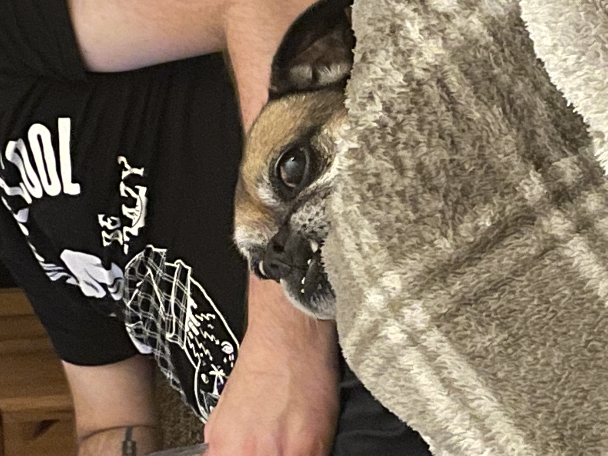

Dukey

Dukey is a 12 year old Pug, Jack Russell mix and lives with me and my family in Ireland. He is a very small dog, but acts much bigger than his size. He may look like an old man but still has the personality of a new born puppy.
Dukey`s favorite treat are rich tea cookies, as well as anything that falls off of the table at meal time. The rest of the family may call him the family dog, but both him and I know he`s really my dog, and one of my best friends.
Photo Gallery



Likes
- Cookies
- Blankets
- Walks (but not long ones)